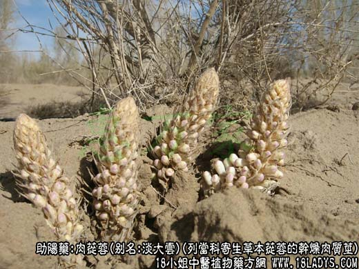
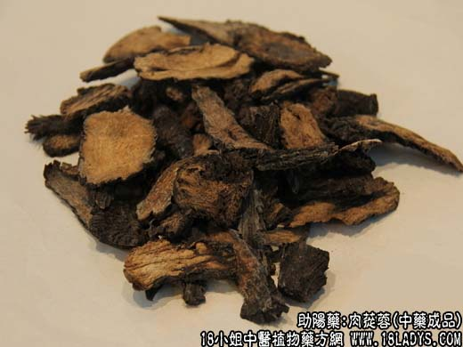
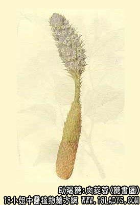

肉苁蓉为较常用中药。始载《神农本草经》，列为上品。
别名：淡大云、甜大云、寸云。
来源：为列当科多年生寄生草本植物苁蓉的干燥肉质茎。野生产于湖边沙地的琐琐林中，寄生于琐琐的根上。
产地：主产于内蒙古、宁夏、甘肃以及新疆等地区。
性状鉴别：肉苁蓉呈不规则扁圆柱形，略弯曲，或呈段块状。长10~20厘米，直径3~5厘米。表面暗棕色或棕褐色，密披鳞片状肉质叶片或残基，呈夏瓦状排列。质坚而稍有韧性，不易折断。断面淡棕色至棕黑色，深浅不一，有辐射状花纹，中央有髓心，有时中空。显肉性。气微，有酱样气味，味微甘。
以肉质茎粗壮肥大，密披鳞叶，表面棕色内碴棕黑色显油润者为佳。
主要成分：含微量生物硷，并有结晶性中性物质。又有报告谓含甙类和有机酸样物质。
功效与作用：滋肾益精、壮阳滑肠，其作用为强壮、通便。
附：水浸液对实验动物有降低血压作用，又能促进小鼠唾液分泌。
炮制：加黄酒蒸透后，切片晒干。
性味：甘、温。
归经：入肾、大肠经。
功能：益精血、补肾助阳、滑肠通便。
主治：男子阳痿，女子不孕，腰膝冷痛，血枯便秘等症。
临床应用：1、治疗肾虚患者，补阳滋阴都一定作用，对肾虚型神经衰弱，有精神不振、体倦、腰酸、健忘、听力减退的患者，尤以适宜。常配杞子、五味子、麦冬、黄精、玉竹等。
又可治肾虚阳痿、早泄、妇女不孕，崩漏带下，竣补之力虽不足，但药性温和，配伍补骨脂、菟丝子、沙苑子、山茱萸肉厚，仍能发挥壮阳作用。
2、治老人气虚、血虚所致的便秘。一般可用肉苁蓉煮猪肉汤服，血虚便秘配当归、生地、火麻仁、方入苁蓉润肠汤；虚秘而汗多、小腹不适，需配沉香。
使用注意：1、一般补阳物多燥，滋阴物多腻，但肉苁蓉补而不燥，滋而不腻，其力不缓，故有苁蓉（与“从容”谐音）之称，兼有表证的肾虚患者也可用；
2、一般用淡苁蓉，偶尔用咸苁蓉，取其有固涩作用，治小便频数和滑精；
3、大便溏泄、实热便秘者不宜用。
用量：6~18g。治便秘常用12~18g。
处方举例：从容润肠唐：肉苁蓉15g，当归12g，生地9g，白芍9g，火麻仁9g，水煎服。
注：除上述淡苁蓉外，产地尚生产一种盐苁蓉，即将采集的鲜苁蓉投放于盐池内浸渍2~3年，取出晒至6~7成干即可。
盐苁蓉又名盐大云，形态与淡苁蓉相似，唯表面黑褐色，外披黄褐色盐霜，质柔韧，易折断，断面黑棕色或黑色。气微，味极咸。主销华东及中南地区。一般在冬季用清水漂洗至无咸味后，切片晒干使用，效用与淡苁蓉相同。
肉苁蓉的原植物据《中药志》记载有苁蓉、迷肉苁蓉和肉苁蓉三种；但近年文献技术的拉丁学名、中文名称、图谱上的形状、以及以哪一种为主，尚不统一，还有待有关单位调查确定。